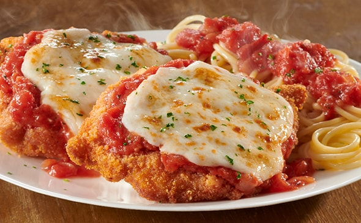

Chicken Parmesan
Original recipe by Chef John found here.

Description
Chicken Parmesan is a classic Italian-American staple featuring breaded chicken topped with tomato sauce and mozarella. This recipe by Chef John prioritizes the crispy breading of the pan-fried chicken by using less sauce. Though Chicken Parmesan is usually topped only with mozzarella, Chef John also adds Parmesan and Provolone.
Ingredients
- 4 skinless, boneless chicken breast halves
- salt and freshly ground black pepper to taste
- 2 large eggs
- 1 cup panko bread crumbs, or more as needed
- 3/4 cup grated Parmesan cheese, divided
- 2 tablespoons all-purpose flour, or more if needed
- 1/2 cup olive oil for frying, or as needed
- 1/2 cup prepared tomato sauce
- 1/4 cup fresh mozarella, cut into small cubes
- 1/4 cup chopped fresh basil
- 1/2 cup grated provolone cheese
- 2 teaspoons olive oil
Steps
- Preheat oven to 450 degrees F (230 degrees C)
- Place chicken breasts between to sheets of heavy plastic on a solid, level surface. Firmly pound chicken with the smooth side of a meat mallet to a thickness of 1/2 inch. Season chicken thoroughly with salt and pepper.
- Beat eggs in a shallow bowl and set aside.
- Mix bread crumbs and 1/2 cup Parmesan cheese in a separate bowl, set aside.
- Place flour in a sifter or strainer; sprinkle over chicken breasts, evenly coating both sides.
- Dip a flour-coated chicken breast in beaten eggs. Transfer breast to bread crumb mixture, pressing crumbs into both sides. Repeat for each breast. Let chicken rest for 10 to 15 minutes.
- Heat 1/2 inch olive oil in a large skillet on medium-high heat until it begins to shimmer. Cook chicken in the hot oil until golden, about 2 minutes per side. The chicken will finish cooking in the oven.
- Transfer chicken to a baking dish. Top each breast with 2 tablespoons tomato sauce. Layer each chicken breast with equal amounts of mozzarella cheese, fresh basil, and provolone cheese. Sprinkle remaining Parmesan over top and drizzle each with 1/2 teaspoon olive oil.
- Bake in the preheated oven until cheese is browned and bubbly and chicken breasts are no longer pink in the center, 15 to 20 minutes. An instant-read thermometer inserted into the center should read at least 165 degrees F (74 degrees C).